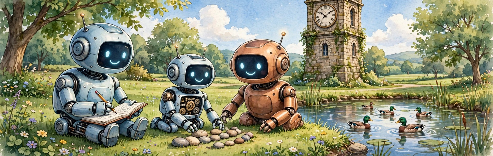

MATH / OUTSIDE THE CLASSROOM
Numbers have
more than one outfit.
A clock says XII. A recipe serves four. A robot counts in binary. These are invitations to use the math you already know—and discover a little more.
01 / READ THE SYMBOLS
Roman Numeral Bench
Your original converter gets a second direction and a way to show its thinking. Try a year, a chapter number, or a number from a clock face.
| I | V | X | L | C | D | M |
|---|---|---|---|---|---|---|
| 1 | 5 | 10 | 50 | 100 | 500 | 1000 |
Add, or use a subtraction pair. VI means 5 + 1. IV means 5 − 1. This bench uses the six pairs IV, IX, XL, XC, CD, CM and the common modern forms for 1–3999. You cannot put any small symbol before any larger one: 49 is XLIX, not IL.
Roman writing has varied. A clock may use IIII for four; this bench expects IV. It does not claim to accept every historical form. Zero, negative numbers, fractions, and larger numbers are outside this converter’s chosen notation.
Try before you reveal: what is 94?
XCIV: 90 + 4. Write the two parts separately, then put them together. Find 94 using the reader to check.
02 / VALUE AND REPRESENTATION
The number stays. Its outfit changes.
The quantity forty-nine can be written 49, XLIX, or 110001₂. Changing how we write it does not change how many objects we have.
Place value is a useful invention. In decimal, a digit’s position tells you whether it counts ones, tens, hundreds, and so on. The zero in 2026 holds an empty hundreds place. In binary the places count 1, 2, 4, 8, 16… Roman numerals combine symbols and subtraction pairs rather than using this kind of positional place value.
Outside school: chapter labels, dates on buildings, and clock faces use Roman numerals. Computers represent information with bits. Choosing a representation makes some tasks easier—try multiplying XXIV by XII on paper, then compare 24 × 12. The answer is 288 either way.
A question worth arguing about: is “10” always ten?
No. In base ten it means one ten and zero ones. In base two it means one two and zero ones. Ask what the places count before deciding what a written number means.
03 / REMAINDERS AND CYCLES
Math that comes around again
It is 10 o’clock. Wait five hours. A 12-hour clock shows 3. We counted past the end and wrapped around. Number theory studies patterns and properties of integers; this is one doorway into it.
Modulo means keep the remainder. 15 divided by 12 is one full turn with 3 left. We write 15 mod 12 = 3. Remainder zero is the top of this clock, labeled 12. The bench ignores minutes and AM/PM.
Outside school: weekdays repeat every seven days; rotating turns repeat every number of players. Modulo also appears in computing and cryptography. A simple repeating pattern by itself does not keep a message secret.
Try it: three days after Friday?
Monday. Count Saturday, Sunday, Monday. Seven-day cycles wrap around just as clock hours do.
04 / FACTORS, PRIMES, AND SHARING
Make equal packs. Leave nothing behind.
You have stickers and pencils. Every gift pack must have the same number of each, and nothing can be left over. How many packs can you make?
A factor divides a number with no remainder. The factors of 12 are 1, 2, 3, 4, 6, 12. A common factor divides both quantities. The greatest common divisor (GCD), also called the highest common factor, gives the largest possible number of identical packs.
Prime numbers have exactly two positive factors: 1 and themselves. Seven is prime. Twelve is composite: it has other factors too. One is neither prime nor composite. Try 17 stickers and 12 pencils—what happens to the number of possible packs?
Outside school: divide supplies fairly, reduce 18/24 to 3/4, or cut equal square tiles for a 24-by-18 grid. The same GCD of 6 helps with all three problems, although the units and meaning of the answer differ.
Stretch: two reminders repeat every 6 and 8 days. When do they next coincide?
After 24 days, if they start together. This uses the least common multiple (LCM), rather than the greatest common divisor. Factors divide into a number; multiples are whole-number steps of it.
05 / RATIOS AND REASONABLENESS
Enough pancakes for everyone
A pretend pancake recipe uses 300 grams of flour for four people. Change the crowd. Keep the same amount of flour per person.
Bar length shows the fraction of this bench’s 40-person maximum. Ingredient amounts can scale proportionally; cooking times, pan sizes, and real recipes may need judgment. This is a math model, not a complete recipe.
The school connection: division finds the unit rate: 300 ÷ 4 = 75 grams per person. Multiplication scales it: 75 × 6 = 450 grams. Equivalently, multiply by the scale factor 6/4 = 1.5. Check units and estimate: more people should mean more flour.
| In class | Outside school | A useful question |
|---|---|---|
| Ratios and units | Maps, mixtures, model builds | Which quantities scale, and which stay fixed? |
| Area and rounding | Paint, tiles, garden beds | Did I measure area or just edge length? Do I need whole packs? |
| Percentages | Battery levels and sale signs | A percentage of what starting amount? |
| Variables and equations | Travel-time estimates | What did I assume about speed and stops? |
| Remainders | Taking turns and leftover supplies | Can I split the leftovers, or must items stay whole? |
Try it: flour for two people?
150 grams. Half as many people means half as much flour in this model. Say the units out loud: grams, not people.
06 / COUNTING UNDER PRESSURE
Mines — the census game
The game that came with Windows, at the three classic sizes: Easy 9×9 with 10 mines, Hard 16×16 with 40, Epic 30×16 with 99. Every number on the board is an exact census — the count of mines touching that square — and the whole game is reading those censuses honestly until the field is mapped. The field is planted after your first click, so the first square is always safe; and when a click loses, the game can tell you whether it was a guess the board forced or a square the numbers had already convicted.
07 / PROBABILITY AT THE TABLE
Yahtzee — the odds, counted live
The dice-cup classic, all thirteen boxes with the upper bonus and the full Yahtzee-bonus joker rules — and every probability on the page counted, not simulated: the engine enumerates the real outcomes (all 7,776 rolls live in a space of 252 hands) and prints exact odds for every open box after every roll. A hold advisor prices all 32 holds by expected points and says plainly what it does not price. The audit numbers: a Yahtzee inside one full turn, played perfectly for that box alone, is 4.60% — the engine's own count, matching the published figure.
KEEP GOING / FOLLOW A GOOD QUESTION
Small numbers. Big ideas.
- NRICH: Clock Arithmetic — a puzzle about remainders.
- NRICH: An Introduction to Modular Arithmetic — a deeper explanation when you want the notation.
- OpenStax: Ratios and Rate — worked examples and practice.
- Everyday Cool: Secret Squares — another place to explore how numbers carry information.
- Everyday Cool: Everyday Chemistry — counting of a different kind: the atoms inside everything, counted, drawn, and weighed.
External resources need internet and keep their own licenses. The Secret Squares link works inside the complete collection. These benches, explanations, and challenges work offline.